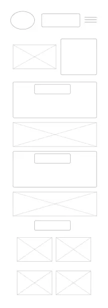

Site Name
Discover Oman
This page is a window for the people around the world to see Oman virtually. The page contains information about the country Oman. It also contains places to visit in the country or tourist spots, the county’s cultures and traditions and the people.
Site Purpose
The main purpose of this page is to help people discover and learn more about Oman. In this page, people will see and experience virtually what it's like to be in the country.
Some features of the page are:
- History: This part provides the brief history of the county.
- About:This part briefly describes the geography, climate, politics and economy of Oman
- Places:This part briefly gives tha audiences a glimpse of the beautiful places they can visit in Oman.
Scenarios
Question 1: What's interesting about Oman?
Question 2: What are the places we can visit in Oman?
Color Schema
- Primary Color: rgb(58, 58, 92)(This color is for heading and footer)
- Secondary Color: rgb(241, 231, 250)(This color is for the main background)
Typography
Roboto for heading, footer and body texts
Wireframe
